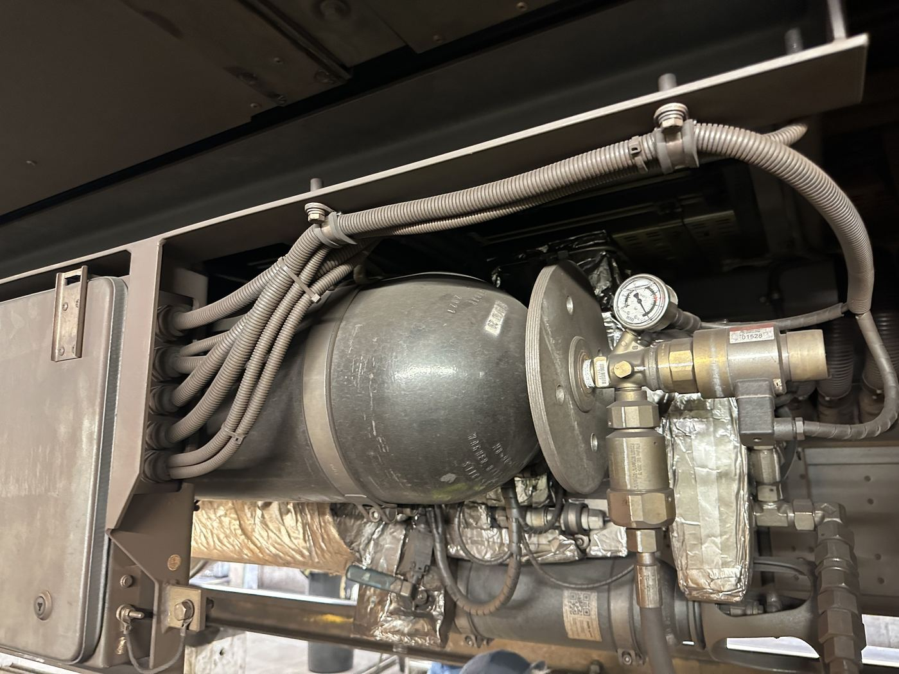

Drucklufttank (WAGNER) mit Manometer und Anschlussleitungen im Unterflurbereich.
Bauteil auf der Seite „Unterbau“
Speichern die vom Kompressor erzeugte Druckluft zwischen, stellen sie bei Bedarf schnell bereit und fangen Drucküberschüsse ab, sodass der Kompressor nicht ständig takten muss.
Die Tanks wirken als Puffer zwischen dem eher langsam nachladenden Kompressor und den Verbrauchern (Bremse, Luftfeder, Türsteuerung), die kurzfristig hohe Luftmengen benötigen können. Das Manometer am Tank erlaubt eine direkte Sichtkontrolle des Systemdrucks bei der Wartung.
Die Auslegung solcher Druckbehälter unterliegt der Druckgeräterichtlinie – Wandstärke, Werkstoff und Prüfintervalle müssen entsprechend nachgewiesen werden.